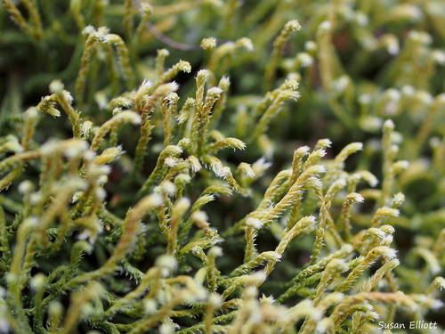

Hedwigiaceae
Hedwigia Moss Family / White-tipped Moss Family
Hedwigiaceae is a small but distinctive family of mosses, typically growing on acidic rocks (**rupestral**) in temperate and montane regions worldwide. They usually form mats or cushions and often have a **hoary** (whitish) appearance due to **hyaline leaf tips**. The family is uniquely characterized by having leaves that completely **lack a costa (ecostate)** and sporophytes with **immersed capsules** that are either **cleistocarpous** (lacking an operculum and peristome) or **gymnostomous** (lacking a peristome but possessing an operculum).
Overview
The Hedwigiaceae family comprises 4 genera (*Hedwigia*, *Hedwigidium*, *Braunia*, *Pseudobraunia*) and around 10-15 species. These mosses are primarily found on exposed, non-calcareous rock surfaces like granite and sandstone, forming often extensive mats or dense cushions. They are common in temperate, boreal, and mountainous areas across the globe.
Plants often have a greyish or whitish cast, especially when dry, due to the presence of clear, hyaline tips on their leaves. This, combined with their rock habitat, can cause confusion with Grimmiaceae, but Hedwigiaceae are fundamentally different in lacking a leaf costa (midrib). Their sporophytes are also unique: the capsules are sessile or nearly so, hidden amongst the upper leaves (perichaetial leaves), and they lack a functional peristome for regulated spore release. Spores escape either through the decay of the capsule wall (*Hedwigia*, *Hedwigidium*) or after the lid falls off (*Braunia*, *Pseudobraunia*).
Ecologically, Hedwigiaceae are important colonizers of bare rock surfaces, contributing to weathering and soil formation in exposed environments. Their phylogenetic position is somewhat debated, often placed in their own order, Hedwigiales, potentially related to Orthotrichales or Bryales.
Quick Facts
- Scientific Name: Hedwigiaceae
- Common Name: Hedwigia Moss Family, White-tipped Moss Family
- Number of Genera: 4
- Number of Species: Approximately 10-15
- Distribution: Cosmopolitan, especially temperate, boreal, and montane regions.
- Habitat: Primarily **rupestral** (on acidic rocks, boulders, cliffs), occasionally walls.
- Evolutionary Group: Bryophytes - Mosses (Class: Bryopsida, Order: Hedwigiales / uncertain)
Key Characteristics
Growth Form and Habit
Plants are functionally **pleurocarpous** (sporophytes lateral on short branches) but often appear acrocarpous or tufted due to erect/ascending secondary stems. They form loose to dense mats or cushions, often somewhat stiff and wiry. Color ranges from green to yellowish-green, brownish, or blackish, frequently appearing **hoary** due to hyaline leaf tips.
Stems
Primary stems may be creeping, with secondary stems erect or ascending, often irregularly or fasciculately (clustered) branched. Paraphyllia are absent.
Leaves
Leaves are crowded, typically appressed or imbricate when dry, spreading when moist. Shape is usually ovate to ovate-lanceolate, strongly concave, and often longitudinally **plicate** (folded). The apex is acute or acuminate, frequently ending in a **hyaline (clear, whitish) tip or hair-point** of variable length. **Crucially, the leaves completely lack a costa (midrib) - they are ecostate**. Leaf margins are typically recurved, especially below, and usually entire or slightly denticulate/papillose near the apex. Leaf cells are typically thick-walled, often strongly **papillose** (with multiple papillae per cell or prorate papillae projecting from cell ends), and vary from quadrate to rectangular or sinuose (wavy walls). Alar cells are generally not strongly differentiated.
Asexual Reproduction
Asexual reproduction can occur via deciduous branchlets or leaf fragments in some species.
Sporophytes (Reproductive Structures)
Sporophytes arise laterally on very short branches, often appearing terminal. The seta is very short or absent, resulting in the capsule being **immersed** amongst the large, often modified perichaetial leaves. The capsule is typically erect, symmetric, globose to ovoid, and thin-walled. A unique feature is the lack of a functional peristome:
- In *Hedwigia* and *Hedwigidium*, the capsule is **cleistocarpous**: it lacks both an operculum (lid) and peristome teeth. Spores are released only by the decay or rupture of the capsule wall.
- In *Braunia* and *Pseudobraunia*, the capsule is **gymnostomous**: it possesses an operculum which falls off, but lacks any peristome teeth.
Habitat
Primarily **rupestral**, growing on exposed, acidic (non-calcareous) rock surfaces such as granite, sandstone, schist, boulders, cliffs, and occasionally on walls or roofs. They prefer dry to periodically moist sites.
Field Identification
Identifying Hedwigiaceae relies on recognizing the rock habitat, often hoary appearance, the critical absence of a leaf costa, and the immersed capsules lacking a peristome.
Primary Identification Features
- Habitat (Key Feature): Growing on **acidic rock** surfaces.
- Leaves Lack Costa (Key Feature): Leaves are **ecostate** (no midrib visible, even at the base – check carefully with a hand lens).
- Hoary Appearance (Common Feature): Often greyish or whitish due to **hyaline leaf tips/hair-points**.
- Capsule Position/Type (Key Feature): Capsules are **immersed** within upper leaves, sessile or on very short setae, globose/ovoid, and **cleistocarpous** (no lid) or **gymnostomous** (lid present, no teeth).
- Growth Habit: Mats or cushions, often appearing somewhat tufted or bushy.
Secondary Identification Features
- Leaves: Often plicate, papillose (check with high magnification), appressed when dry.
Seasonal Identification Tips
- Year-round: The distinctive gametophytes (ecostate, often hoary) are visible year-round on rocks.
- Sporophyte Timing: Immersed capsules can often be found throughout the year by carefully dissecting the tips of fertile branches. Mature capsules releasing spores (via decay or lid loss) might be more common in certain seasons (e.g., spring/summer).
Common Confusion Points
Hedwigiaceae, especially *Hedwigia*, are most often confused with:
- Grimmiaceae (e.g., *Grimmia*, *Schistidium*): Also common on rock, often hoary. Critically distinguished by **possessing a leaf costa**. Even *Schistidium* with immersed capsules has a costa and a different capsule structure (operculum+columella fall together, peristome present though sometimes rudimentary).
- Andreaeaceae: Also on acidic rock, dark cushions, ecostate leaves. Distinguished by very different leaf cell structure (small, thick-walled, often smooth vs. papillose in Hedwigiaceae) and unique capsule dehiscence (slits on a pseudopodium).
- Orthotrichaceae: Some grow on rock, acrocarpous, but have a costa, ribbed capsules (usually), and a peristome.
Confirming the absence of a costa is crucial for identifying Hedwigiaceae and separating it from the superficially similar Grimmiaceae.
Field Guide Quick Reference
Look For:
- Habitat: **Acidic rock**
- Mats or cushions (often hoary)
- Leaves **ECOSTATE** (no midrib!)
- Leaves often with **hyaline tip/hair-point**
- Leaves often plicate, papillose
- Capsule **immersed**, sessile/short seta
- Capsule **cleistocarpous** or **gymnostomous**
Key Variations:
- Presence/length of hyaline hair-point
- Capsule type (cleistocarpous vs. gymnostomous)
- Leaf cell papillosity
- Perichaetial leaf margins (ciliate vs. entire)
Notable Examples
The family includes a few distinct genera:

Hedwigia ciliata
Fringed Hoar-moss / White-tipped Moss
A very common and cosmopolitan species on acidic rocks. Forms loose to dense, hoary mats. Leaves ovate-lanceolate, plicate, ecostate, with hyaline tips. Perichaetial leaves have distinctive cilia (hairs) along their upper margins. Capsules are immersed and cleistocarpous.

Hedwigidium integrifolium
(No standard common name)
Similar in appearance and habitat to *Hedwigia*, found primarily in the Southern Hemisphere and some northern outposts. Differs mainly in having perichaetial leaves with entire (not ciliate) margins. Also cleistocarpous.

Braunia spp.
(Braunia Mosses)
Found in warmer temperate and tropical montane regions, often forming robust cushions on rock. Leaves are ecostate, often plicate and papillose, sometimes with hyaline tips. Distinguished from *Hedwigia* by having gymnostomous capsules (possessing an operculum but no peristome).
Phylogeny and Classification
Hedwigiaceae belongs to the class Bryopsida. Its unique combination of features (ecostate leaves, immersed cleistocarpous/gymnostomous capsules) has led to debates about its precise phylogenetic position. It is often placed in its own distinct order, Hedwigiales.
The relationships of Hedwigiales to other major moss orders are not fully resolved. Morphological similarities (e.g., aspects of the sporophyte reduction) have sometimes suggested affinities with Orthotrichales, another order containing many rock-dwelling and epiphytic mosses with often reduced peristomes. Molecular studies often place Hedwigiales as an independent lineage within the subclass Bryidae, potentially diverging relatively early, perhaps sister to or near Orthotrichales or Bryales, but its exact placement requires further research.
Position in Plant Phylogeny
- Kingdom: Plantae
- Division: Bryophyta (Mosses)
- Class: Bryopsida
- Subclass: Bryidae
- Order: Hedwigiales (often recognized) / or near Orthotrichales/Bryales
- Family: Hedwigiaceae
Evolutionary Significance
Hedwigiaceae is evolutionarily interesting due to:
- Loss of Costa: The complete absence of a leaf midrib (ecostate condition) is unusual among mosses with this general morphology and habitat, representing a significant structural modification.
- Sporophyte Reduction: Shows extreme reduction in the sporophyte presentation (immersed, sessile) and dispersal mechanism (cleistocarpy/gymnostomy), likely adaptations to its exposed rock habitat.
- Isolated Lineage: Represents a distinct evolutionary branch within the Bryopsida, contributing to the overall picture of moss diversification.
- Convergent Evolution: The hoary appearance due to hyaline leaf tips is convergent with unrelated families like Grimmiaceae, illustrating similar adaptations to high light/desiccation stress.